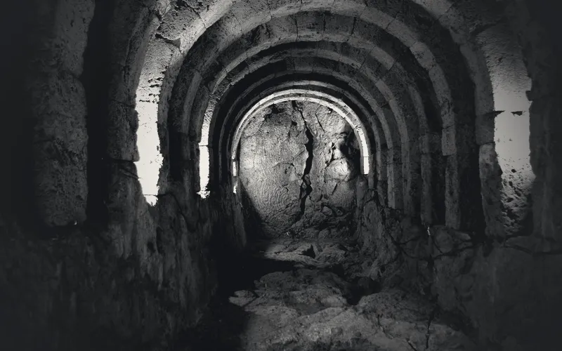

Periandro e Melissa
O tirano Periandro, de Corinto, mandou perguntar à alma de sua esposa Melissa onde estava um tesouro. Ela respondeu que sentia frio: as roupas dela não tinham sido queimadas no funeral.
Heródoto, Histórias V
LUGARΝεκυομαντεῖον
O Oráculo dos Mortos, no Épiro, perto do encontro do rio Aqueronte com o Cocito. Era onde os vivos tentavam falar com as almas. As ruínas apontadas como o santuário ainda dividem os arqueólogos.
Aqui os vivos tentavam chamar os meus hóspedes para conversar. Repare: eles vinham até a beira, perguntavam e iam embora. Ninguém passava pelo meu portão.
O tirano Periandro, de Corinto, mandou perguntar à alma de sua esposa Melissa onde estava um tesouro. Ela respondeu que sentia frio: as roupas dela não tinham sido queimadas no funeral.
Heródoto, Histórias VNa Odisseia, o herói vai à entrada do Hades, onde os rios se encontram, e oferece sangue para as almas falarem. Muitos ligaram essa cena à região do Aqueronte.
Conhecer o Aqueronte →A partir de 1958, o arqueólogo Sotírios Dákaris escavou salas e uma câmara subterrânea e as identificou como o oráculo. Outros estudiosos veem ali uma fazenda fortificada. O debate continua.
Arqueologia moderna“Periandro enviou mensageiros à Tesprótia, ao rio Aqueronte, para consultar o oráculo dos mortos.”
Heródoto, Histórias, livro V (tradução livre)